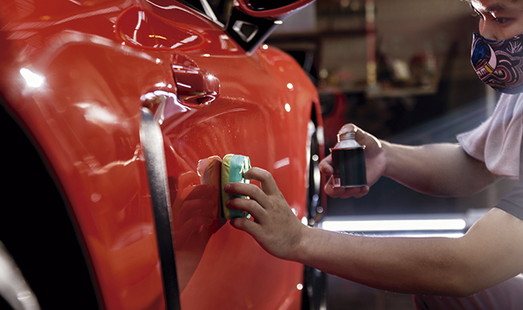

Trabajos
Tratamiento acrílico
Explicacion de que es un tratamiento acrilico
Tratamiento cerámico
Explicacion de que es un tratamiento ceramico
Limpieza de interiores
Explicacion de que es una limpieza de interiores
Sacabollos
Explicacion de como sacar bollos
Pintura y detallado de llantas
Explicacion sobre como trabajamos en las llantas y el tipo de servicio que brindamos sobre restaurarlas y pintarlas.